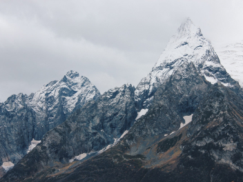
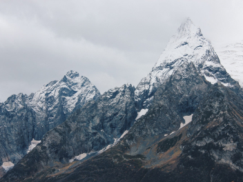

Путешествия по России
Настоящая страна не в выпусках новостей, а здесь.

ваша полка — верхняя
Чего мы там не видели?
По опросам ВЦИОМ, 95% россиян мечтают куда-нибудь поехать, но только 36%
планируют провести отпуск в родной стране. Мол, чего мы тут, дома, не видели? На
самом деле, Россия — это целая вселенная с ласковым морем юга, густыми лесами
Саян и суровыми льдами плато Путорана. А ещё увидеть все эти красоты можно без
миллионов на счету, загранпаспорта и многочасовых перелетов. Как, например, Вера
Башмакова — смелая молодая мама, которая взяла в охапку троих детей, усадила их
в свою «Ладу» и проехала 20 тысяч километров по родной стране. Мы выбрали и
описали некоторые интересные места, достойные вашего отпуска.
- Часовых поясов 11
- Объектов природного наследия ЮНЕСКО 12
- Объектов культурного наследия ЮНЕСКО 16
- Природных заповедников 105
- Аэропортов 241
Куршская коса

Здесь, посреди лесов и песчаных дюн, вы сможете
увидеть два водных горизонта — спокойного
Куршского залива с одной стороны и подёрнутого
рябью волн Балтийского моря с другой. Уникальная
природная зона на краю российского анклава.
На этом Калининградская область
не заканчивается.
Для путешественника
и исследователя там же
по соседству — самая западная
точка России, Балтийская коса, —
и немецкое наследие россыпи
небольших приморских городов.
Атмосфера здешних мест
исключает суету, окуная
в спокойствие природы и запах
стального, прохладного моря.
Кольский

Почти весь полуостров находится
за Полярным кругом. Саамская
тундра, от которой на юг — тайга,
а на север — Ледовитый океан,
прикидывающийся Баренцевым морем.
Возможно, вы смотрели
Звягинцева и даже слышали
историю арктического фестиваля в
Териберке. Возможно, слово
«Хибины» не осталось под снегом
школьных воспоминаний об уроках
географии. Возможно, вы не
интересовались пронизывающей
земную кору сверхглубокой
скважиной, а от апатитов вас давно
накрывает апатия. Но ваша мечта
увидеть северное сияние начинает
сбываться с билетом в Мурманск.
Алтай

Алтай — одно из красивейших мест
в России. В первую очередь из-за
гор: если ехать вдоль хребта, вы
увидите склоны, усыпанные
соснами, горные реки и озёра.
А если вы откроете в автомобиле
окна, сможете познакомиться с
невидимым чудом здешних мест —
горным воздухом.
Климат на Алтае умеренный,
поэтому ехать сюда лучше всего
летом. Так вы увидите всё
разнообразие местной флоры и
фауны. По лесам Алтая бродят
лоси, над хребтами летают орлы,
а на равнинах пасутся косули.
И знаменитые манулы — тоже
обитатели Алтайского края.
Зимний Байкал

Всем известен Байкал как
крупнейшее озеро в мире. Многие
также знают, что это самый
большой источник пресной воды
и одно из красивейших мест
в России.
Конечно, это всё так. Но Байкал
ещё идеальное место для
соревнований по скийорингу. Это
такой вид спорта, когда лыжник
привязывает себя
к мотоциклу, и тандем старается
развить как можно бóльшую
скорость на льду. В марте 2019
года на фестивале «Байкальская
миля» был поставлен»мировой
рекорд —197.011 км/ч.
Карелия

Сибирь заканчивается не на Урале,
а в Карелии: образующая тайгу
сибирская лиственница не растёт
западнее Водлозера. Зато здесь
она вымахивает на 30 метров —
леса карельских национальных
парков из-за непроходимых болот
никогда не знали топора.
Некоторым соснам уже больше
чем полтысячелетия. Прикоснитесь
к живому существу, видевшему
солнце раньше, чем увидал его
Иван Грозный. В девственном лесу
на сотню километров не встретишь
тропы. А на редких тропинках
деревья в паре метров от земли
помечены медвежьими когтями.
Чтобы все знали, кто тут хозяин.


 
